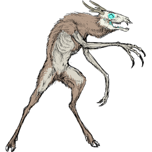

-
Wendigo
Ep - 02/Season - 1
Descrição
Os Wendigo são criaturas que deixaram de ser humanos há muito tempo.
Pontos fortes: Ótimos caçadores de dia, melhores ainda à noite.
Pontos fracos: Fogo. -
Ghoul
Ep - 19/Season - 4
Descrição
Os Ghouls são criaturas que se alimentam de cadáveres bebendo seu sangue.
Pontos fortes: Conseguir se disfarçar de outros humanos.
Pontos fracos: Decapitação, vamptonite, dano cerebral extremo. -
Lobisomem
Ep - 17/Season - 2
Descrição
Lobisomens são carnívoros humanóides, a melhor combinação entre lobos e humanos.
Pontos fortes: Super força, super resistência, super velocidade
Pontos fracos: Decaptação, prata